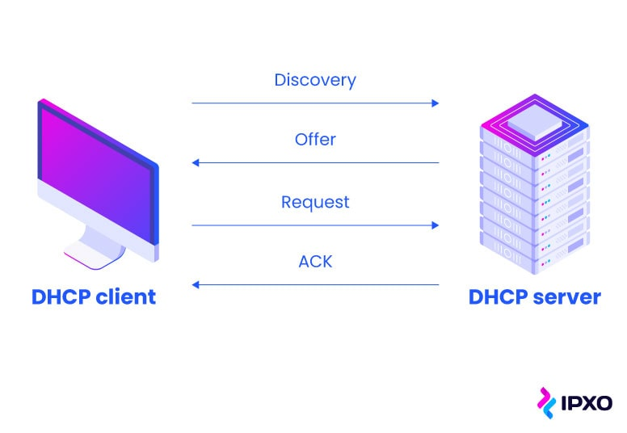
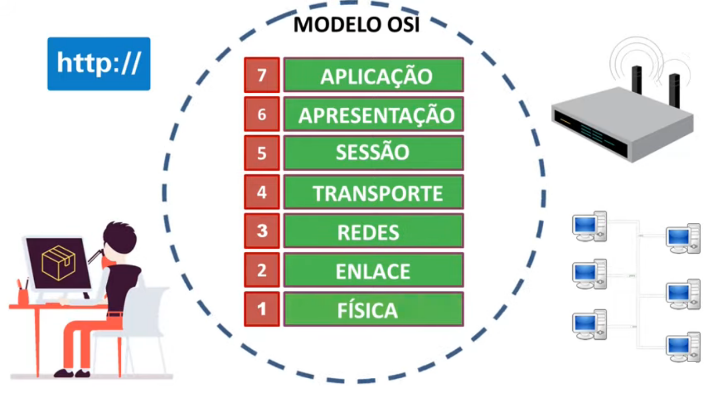
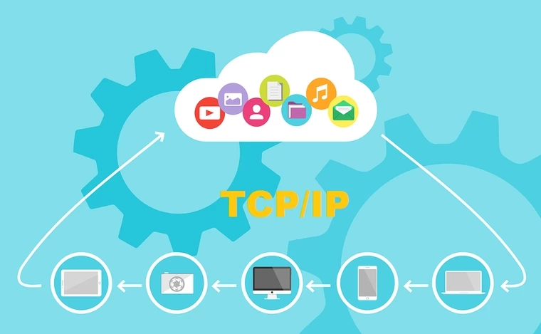

DNS

O DNS ou Domain Name System, é basicamente o sistema que vai permitir que você traduza o endereço de IP (exemplo: 216.58.217.46) da sua internet em nome de sites (exemplo: www.bifaodlc.com). Ele vai acabar funcionando quase que como uma lista telêfonica da internet.
DHCP
O protocolo do DHCP ou Dynamic Host Configuration Protocol, é praticamente um protocolo de cliente/ servidor que vai fornecer um host de IP. Host esse em que estará incluso o endereço de IP do usuário, e outras informações similares como a máscara de sub-rede e o gateway padrão.
FTP
O FTP ou File Transfer Protocol, é um protocolo de rede que vai permitir a transmissão entre dois computadores. A partir do conjunto TCP/IP, ele é um protocolo da camada de aplicação para permitir e viabilizar o download e upload de arquivos em conexões do tipo cliente/servidor.
HTTP/ HTTPS

O HTTP ou Hypertext Transfer Protocol é basicamente o protocolo que vai possibilitar a utilização e inserção de uma URL em seus sites na web, possibilitando que as pessoas possam ver os conteúdos e dados dentro dele. E o HTTPS é praticamente a mesma coisa, mas o "S" em seu nome é como uma amostra de que a segurança do site é maior.
MODELO OSI
O modelo OSI foi o primeiro padrão de comunicação entre sistemas e redes, que é dividido em sete camadas como uma forma de garantia para que essa conversa aconteça.
MODELO TCP/IP
O TCP/IP é um conjunto de protocolos de comunicação entre computadores em rede que se caracteriza pela definição de um modelo padrão de camadas para implementação na arquitetura de rede. Com objetivo semelhante ao do modelo OSI no que diz respeito à divisão da arquitetura em camadas, o TCP/IP consiste na junção dos protocolos TCP, dois dos mais utilizados.
UDP

O Protocolo UDP é um protocolo de comunicação utilizado em toda a internet para transmissões com validade especialmente limitada, tais como reproduções de vídeo ou pesquisas no DNS.
WEBSERVER
Um web server é um sistema computacional que hospeda e fornece acesso aos conteúdos e aplicações através da internet. Geralmente contratado como um serviço, esse servidor recebe e processa as solicitações feitas por navegadores através de protocolos de rede como o HTTP ou HTTPS.